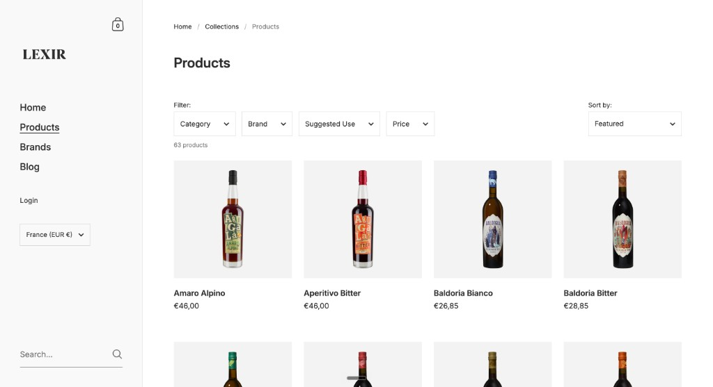
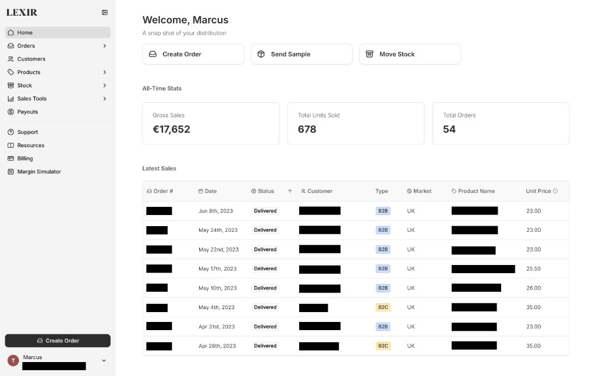

Lexir
A B2B platform that helps craft wine and spirits brands launch and grow in Europe without a traditional distributor. Brands stay in control of stock and pricing, and keep much higher margins.
- Owned the dashboard, storefront, and margin calculator end to end
- Helped grow from 1→8 European markets and a handful of brands to ~70
- Moved shop and checkout off custom builds so we could ship in weeks, not months

Why craft brands needed a different path
Most craft brands that want to sell in a new European country go through a traditional distributor. That model wasn’t built for small, independent brands. Margins are slim, sales attention is uneven, and getting started often means high barriers and bulk expectations. If you’re testing Paris or London for the first time, you might only want to send about 100 bottles and learn. The traditional path usually wants thousands.
The problems stack from there. Product can pass through importer, distributor, wholesaler, and retailer — each taking a cut. Onboarding a new brand can take months. Competing bottles sit in the same portfolio. Pricing is opaque. Brands get little useful performance data. And expanding usually means finding a new distributor for every market. It’s slow, expensive, and easy for a craft brand to get lost.
Lexir was trying to offer a different path: not “we buy your stock and own the relationship,” but the infrastructure to get into a market yourself — import, warehousing, e-commerce, last-mile delivery, analytics, and connections to local salespeople — while you keep pricing, margins, and control. The tradeoff is more work on the brand’s side. The upside is you can start small and stay in charge.
| Dimension | Traditional distributor | Lexir |
|---|---|---|
| Barriers & margins | High barrier to entry, slim margins, and uneven sales attention for small or new brands | Lower barrier to start; brands keep pricing power and much higher margins |
| Cost structure | Long chain of middlemen (importer, distributor, wholesaler, retailer), each taking a cut | One platform path: import, warehouse, shop, delivery, and analytics |
| Speed to launch | Onboarding is slow — often months — and processes can feel outdated | Built to get brands live faster, including small test shipments |
| Portfolio focus | Easy to get lost among competing products in the same book | Brand keeps ownership of stock, story, and how they’re sold |
| Buyer access | Mostly existing retail/wholesale channels; limited direct reach | Storefront for buyers, plus room for more direct brand-to-buyer relationships |
| Scaling markets | Usually means finding a different distributor for every country | Add markets on the same platform instead of rebuilding the whole setup |
| Pricing clarity | B2B pricing is often complex and hard to follow | Brand sets prices; tools like the margin calculator make the economics visible |
| Data & visibility | Brands are often left in the dark on how products are performing | Dashboard analytics so brands can see what’s working |
Our users on the brand side were mostly founders of craft brands (from Europe, the US, Mexico, Vietnam, and elsewhere) who were good at marketing their product but needed help with distribution. On the shop side, buyers were mostly B2B: premium cocktail bars and restaurants. There was also some B2C from craft enthusiasts who cared a lot about the story behind a bottle.
Owning the product end to end
I led the development and release of the brand dashboard and e-commerce platform, owned the product roadmap, and helped shape go-to-market (positioning, channels, and how we explained Lexir) while writing specs for a remote design and engineering team of five across Europe and South America.
I ran regular client interviews to find feature gaps, usage patterns, and where prospects got stuck on the value proposition. That shaped both the roadmap and how we explained Lexir: what it actually did for a brand, and why switching was worth it. Making that value obvious mattered to our growth as much as shipping features.
What I owned vs shared
Mostly me: dashboard, storefront, onboarding, sales-partner landing page (built with no-code), catalog storytelling, Instagram and outbound messaging.
Shared with founders: roadmap priorities and GTM direction; product pricing stayed in fairly strict bounds based on their lead and what clients would pay.
Throughline: help people understand Lexir, and keep the product lined up with what users needed and what the business needed.
What brands and buyers actually used
Brands spent most of their time in a dashboard: products, markets, orders, analytics. Buyers bought through a storefront. For craft products, the writing and photography mattered a lot. People were more willing to buy when they understood the story, the ingredients, and what made the brand different. I spent a lot of early energy on the product catalog: the copy, the photos we chose, and the layout.
One tool I’m proud of is the margin calculator (I worked on the Figma layout with our designer). A brand could enter bottles, price, market, and alcohol percentage, and see a breakdown per bottle: what went to a salesperson, what went to Lexir, tax, and shipping. That kind of math was specific to us, so it stayed custom-built.

Margin calculator, edit product
Blur or replace real brand names and private data in any dashboard shots.
Agreeing with the idea wasn’t the same as knowing how to run it
We could convince a brand that this model was better than a traditional distributor, and they would still ask questions that belonged to the old world. The one I heard most was: “What prices will you set on my products?” We would say: you set your own prices. That kept coming up, and it told us something important. It wasn’t enough to hand someone a new set of tools. We also had to show them how to use those tools in a real market: how to think about pricing, how to label bottles for a new country, how taxes worked, and how to find people on the ground.
We couldn’t personally answer every question for hundreds of brands in every city. One response was building toward local sales specialists: people in-market who worked with brands as guides, outside Lexir’s day-to-day support load. We also wrote guidance and built the margin calculator so brands could see the economics before they committed.
Pricing
Brands asked us to set prices the way a distributor would. We built guidance and the margin calculator instead.
Local connections
Many brands didn’t know anyone in the new market. Sales partner connections became a big part of lowering the barrier.
Start small
A brand could test with roughly 100 bottles or samples to bars, learn, then grow, without a huge bulk commitment.
We were spending weeks rebuilding things that already existed
Early on we were building a lot of the shop ourselves. I remember us building checkout, for example. Checkout is a solved problem. We could pay for a mature platform and get a solid version, or have our small team spend weeks recreating a weaker one. The same was true for large parts of the storefront and onboarding.
I pushed us to move the platform onto a no-code / low-code tool (I won’t name it here) so we could move faster and stop rebuilding commodity features. The founders were hesitant at first. We had already invested in the custom path, and switching felt like throwing that away. I showed how quickly we could get to the same place with the new approach: work that felt like it would take months on our current pace could be done in a couple of weeks. That let engineering focus on what was actually specific to Lexir, like the margin calculator. We also pushed the no-code tool hard and wrote custom embeds when we hit its limits.
What moved vs what stayed custom
Moved: much of the shop platform, checkout-style flows, a lot of onboarding and landing.
Stayed custom: margin calculator and other Lexir-specific logic.
The cost savings were large. On this page I’m leading with speed and focus rather than a dramatic percentage.
Marketing had to teach the new model, not just list features
Because most people only knew traditional distribution, we had to show the old way and the new way side by side. I worked on landing pages, catalog copy, emails, social, and the homepage explainer video (I wrote the script, did the voiceover, and produced the music and audio; a partner handled animation).
The idea I wanted someone to leave with was simple: Lexir is the tool craft brands should use to break into new markets, because you keep control of your stock, set your own prices, keep higher margins, and face a lower barrier to entry than signing with a traditional distributor.
On the sales side, Instagram messages worked better for us than cold email. A lot of people treat email as a chore. A DM from a brand they already find interesting is more likely to feel like a welcome conversation. I ran the Instagram account, shaped those messages with the sales team, and kept updating them based on what got replies.
Homepage explainer — script, voiceover, and audio by me; animation by a partner.

What this work taught me
If the model is new, explaining it is part of the product
Features alone don’t get someone to change how they distribute alcohol. You have to make the old path feel costly and the new path feel usable, including guidance after they say yes.
Don’t rebuild commodity software when you’re small
Building our own checkout and shop pieces burned time we didn’t have. Moving that onto existing tools let us spend engineering on what only Lexir needed.
Giving someone tools isn’t the same as helping them succeed
Brands still asked us to set their prices after they understood the pitch. Local sales partners, the margin calculator, and how-to guidance mattered as much as the dashboard.
I would have focused the public story more
Looking back, I would have pushed harder to lead with the B2B “help brands enter markets” story, and to separate that more cleanly from B2C. We touched a lot of surfaces. Clearer focus would have helped.
If there’s one thing I want someone reading this to take away: I’m comfortable owning messy, end-to-end work at a startup. I care a lot about whether people understand what they’re looking at, and I try to balance that with what the business needs to ship and sell.
Still useful before merging to live
- Confirm stats: 1→8, ~70 brands, “faster / weeks not months”
- Add
images/case_studies/lexir/catalog-preview.pngfor the DocSend card - Screenshots still useful: margin calculator, dashboard with names blurred
- When happy with tone: merge into
project.html?id=lexir